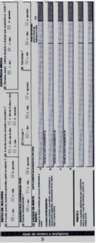
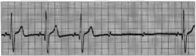
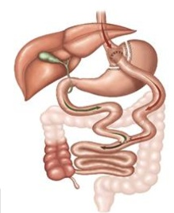

Questão 1 · Gênero · 4000104746“O Brasil realiza uma me ambulatoriais. O processo transexualizador marca a garantia do acesso à saúde, das diferenças humanas, da necessidade de cuidar de uma população que, em função da sua exclusão, estava sofrendo agravos, explica Suzana Livadias.” – Diário de Pernambuco, 04/08/2018. De acordo com o Processo Transexualizador do SUS, assinale a alternativa correta:
A A cirurgia de redesignação sexual deve ser realizada a toda pessoa transexual maior de 21 anos que não tenha contraindicações.
B A hormonioterapia cruzada de hormônios sexuais para pessoas travestis pode ser indicada a partir dos 18 anos de idade.
C O acompanhamento transdisciplinar de saúde mental é necessário, dado o status de transtorno mental da transexualidade.
D O atendimento de crianças e adolescentes transexuais não é indicado, devido à sua vulnerabilidade e risco de confusão de gênero.
Questão 2 · Acne · 4000104726Adolescente, feminino, 16 anos, vem à consulta queixandose de “espinhas” no rosto. Relata uso pre indicado pelo farmacêutico, sem melhora. Estatura e IMC no escore Z entre 0 e +1. Genitais M5P5, menarca aos 12 anos, com regularidade menstrual. Presença de comedões, lesões cicatriciais eritematosas e predominância de pápulas eritematosas com algumas pústulas em região frontal, massaterina e mentoniana. Sem outras alterações ao exame físico. Além dos cuidados gerais com a pele, o tratamento também deve incluir:
A Tretinoína gel a 0,025% associado com antibiótico tópico como a clindamicina a 1%, uma ou duas vezes ao dia e antibiótico oral como a minociclina 100mg, uma vez ao dia.
B Adapaleno gel a 0,1%, uma vez ao dia.
C Adapaleno gel a 0,1%, uma ou duas vezes ao dia, associado a antibiótico oral como a minociclina 100mg, uma vez ao dia.
D Tretinoína gel a 0,025% associado com antibiótico tópico como a clindamicina a 1%, uma vez ao dia.
Questão 3 · Dislipidemias · Hipertensão arterial HAS em crianças e adolescentes · Diagnóstico Nutricional · 4000104711Adolescente, masculino, 12 anos e 6 meses, negro, vem à consulta para avaliação dos resultados de exames. Exame físico: altura = 160cm, índice de massa corpórea (IMC) = 26 kg/m2 (escore Z +2,3), pressão arterial (PA) = 122 x 77 mmHg (entre p90 e 95, valores idênticos obtidos em duas outras ocasiões), circunferência abdominal (CA) = 88cm (> p90), Tanner = G3P3. Sem alterações no restante do exame físico. Exames laboratoriais: colesterol total = 200 mg/dL (desejável < 150 e aumentado ≥ 170 mg/dL), HDL = 30 mg/dL (deseja mg/dL), triglicérides = 210 mg/dL (desejável < 100 e aumentado ≥ 130 mg/dL), glicemia de jejum = 91 mg/dL (desejável < 100 mg/dL), insulina basal = 24 4). Quais os diagnósticos deste paciente?
A Sobrepeso, pressão arterial elevada, hipertrigliceridemia.
B Obesidade, hipertensão estágio 1, dislipidemia mista.
C Obesidade, pressão arterial elevada, síndrome metabólica.
D Sobrepeso, hipertensão estágio 1, resistência insulínica
Questão 4 · Maturação sexual · Estirão · 4000104693Com relação ao crescimento e à puberdade em adolescentes, pode-se afirmar que:
A Meninas e meninos iniciam o estirão de crescimento em idades cronológicas semelhantes.
B Em estágio M3 de mamas, as meninas encontram-se no pico do estirão de crescimento.
C A identificação do estágio G2 dos genitais pelos critérios de Tanner pode indicar de que o estirão de crescimento está se iniciando no sexo masculino.
D O desenvolvimento da massa muscular ocorre paralelamente ao estirão de crescimento de maneira semelhante em ambos os sexos.
Questão 5 · Escala de Coma de Glasgow · Escala de Coma de Glasgow · 4000104674Menina, 12 anos, foi atropelada enquanto andava de skate. Chega ao pronto-socorro sonolenta e referindo muita dor na região cervical. Exame físico: regular estado geral; FC = 100bpm; FR = 20 irpm; PA = 100 x 70 mmHg; pulsos cheios; localiza dor, confusa, pupilas isofotorreagentes, reflexos osteotendíneos presentes e simétricos, ausência de paralisia de pares cranianos. Os dados do exame físico utilizados para determinação da escala de coma de Glasgow são:
A Resposta pupilar, resposta motora, reflexos osteotendineos.
B Resposta pupilar, reflexos osteotendíneos, avaliação de pares cranianos.
C Resposta ocular, resposta verbal, resposta motora.
D Resposta verbal, avaliação de pares cranianos, resposta motora
Questão 6 · Asma · Classif icação e Tratamento da Crise · Asma · 4000104657Uma menina de cinco anos de idade, asmática, foi levada ao setor de emergência com tosse e falta de ar há doze horas. Fez uso de salbutamol por aerossol dosimetrado, em casa, sem melhora. Ao exame físico, estava taquidispneica, acianótica, hidratada, com frequência respiratória de 48 ipm, saturação de oxigênio de 88% em ar ambiente, tiragem subcostal e intercostal, além de retração de fúrcula. A ausculta respiratória revelou tempo expiratório prolongado e sibilos disseminados. Recebeu corticosteroide sistêmico e três inalações com beta-2 agonista e ipratrópio. Nesse caso hipotético, a melhor conduta é:
A Sulfato de magnésio endovenoso
B Terbutalina subcutânea
C Corticosteroide inalatório
D Aminofilina endovenosa
Questão 7 · Pediatria · Cenário Atual e Princípios Básicos do ATLS · Cirurgia · 4000104639Criança de 10 anos é atropelada por um carro a 50 km/h. Veio ao pronto-socorro trazida pelo SAMU em prancha rígida e colar cervical com headblock. Socorrista informa que criança apresenta 4 lesões: Hematoma craniano frontal subgaleal de 20cm de diâmetro, perda de 3 dentes com sangramento oral, hematoma em tórax com marca de pneu e fratura exposta de fêmur direito. Na ambulância apresentava-se em REG, hipoativo, FC: 130 bpm, tempo de enchimento capilar: 4 segundos, normotenso, FR: 45 irpm, Saturação 88% em ar ambiente. Qual dessas lesões você avaliará primeiro?
A Lesão torácica
B Hematoma craniano frontal subgaleal
C Lesão de cavidade oral
D Fratura exposta de fêmur
Questão 8 · Crise de sequestro esplênico · 4000104622Criança de 9 meses com anemia falciforme apresenta palidez súbita com hipoatividade e dor abdominal. Familiares negam febre. Apresenta baço em fossa ilíaca esquerda e fígado normal. Hemograma demonstra Hb: 3; 10% de eritroblastos; plaquetas: 150.000 e Leucócitos 15.000, sem desvios. Qual a hipótese diagnóstica mais provável?
A Rotura traumática do baço
B Sequestro esplênico
C Anemia hemolítica autoimune
D Leucemia
Questão 9 · Fase de manutenção · 4000104602Paciente feminina com 4 anos de idade deu entrada na UPA por diarreia e vômitos há 3 dias. As fezes eram líquidas, sem muco ou sangue, vários episódios ao dia. Febre baixa. Não foi indicado TRO, pois a criança apresentava-se apática, desidratada grave, hipotensa e oligúrica. Recebeu fase rápida com 20 mL/kg de soro siológico em 20 minutos. Após este período foi reavaliada: ainda desidratada, oligúrica, outra fase rápida semelhante foi indicada. A paciente hidratou e foi encaminhada para a Unidade de Internação Hospitalar. Assinale abaixo a provável fase de manutenção instalada (peso ao hidratar: 16kg):
A Soro glicosado 5% 1600mL + NaCl 20% 52mL + KCl 19,1% 13 mL..
B Soro glicosado 5% 1300mL + NaCl 20% 11,4mL + KCl 19,1% 13mL.
C Soro glicosado 5% 1300mL + NaCl 20% 52mL + KCl 19,1% 13mL.
D Soro glicosado 5% 1600mL + NaCl 20% 11,4mL + KCl 19,1% 16mL.
Questão 10 · Agentes etiológicos · 4000104584Quais são os principais agentes etiológicos das pneumonias adquiridas na comunidade?
A Entre 4 meses e 5 anos: vírus, Streptococcus pneumoniae, Staphylococcus aureus, Haemophilus influenzae, Moraxella catarrhalis, Mycoplasma pneumoniae, Chlamydia pneumoniae.
B Acima de 5 anos: vírus, Streptococcus pneumoniae, Staphylococcus aureus, Mycoplasma pneumoniae, Chlamydia pneumoniae.
C Entre 1 e 3 meses: vírus, Chlamydia trachomatis, Chlamydia pneumoniae, Mycoplasma pneumonia, Streptococcus pneumoniae, Staphylococcus aureus.
D Adolescentes: Clamydia pneumoniae e Streptococcus pneumoniae
Questão 11 · Palivizumabe · Bronquiolite · 4000104565Sobre a bronquiolite, é INCORRETO afirmar:
A A bronquiolite geralmente apresenta quadro clínico autolimitado, com seu pico de piora entre o terceiro e o quinto dias, mas os sintomas podem perdurar por até 3 semanas.
B O adenovírus é o principal agente causador da bronquiolite obliterante.
C Menores de 3 meses acometidos pela doença não necessariamente necessitam de internação.
D O palivizumabe é fornecido pelo Sistema Único de Saúde para prematuros extremos, cardiopatas graves e anoxiados graves.
Questão 12 · Convulsão · 4000104521Pré-escolar, 4 anos, internado em enfermaria devido a quadro de cefaleia, crise convulsiva única (pais não sabem definir tipo e referir tempo exato de crise), febre e vômitos iniciados há 2 dias. Diante do quadro exposto, quais exames devem ser solicitados imediatamente e qual ordem dos anticonvulsivantes em caso de crises epilépticas reentrantes / estado de mal epiléptico?
A Tomografia de crânio e líquor - Diazepínicos, Fenobarbital, Fenitoína.
B Fundo de olho e tomografia de crânio - Fenobarbital, Fenitoína e Diazepínicos.
C Tomografia de crânio e líquor - Diazepínicos, Fenitoína, Fenobarbital.
D Tomografia de crânio e ressonância magnética de crânio – Diazepínico, Fenitoína e Fenobarbital.
Questão 13 · Amamentação Aleitamento Materno · 4000104503Com relação ao aleitamento materno, assinale a alternativa correta:
A São pontos-chaves da observação da mamada: posicionamento, pega e sucção.
B São contraindicações absolutas de aleitamento materno as presenças de infecções por citomegalovírus e herpes.
C O leite materno ordenhado pode ser armazenado por 24 horas na porta da geladeira.
D O aleitamento materno exclusivo pode ser prolongado após 6 meses de idade, caso a criança esteja ganhando peso adequadamente.
Questão 14 · Calendários vacinais · ImunizaçõesVacinação · 4000104478Menino de 7 meses e 15 dias de vida é trazido para consulta de rotina na Unidade Básica de Saúde na qual você está atendendo, no município de Santo André. Natural e procedente do mesmo município. No seu cartão vacinal constam: 1 dose de BCG e 1 dose de hepatite B recebidas ao nascimento; 2 doses de Pentavalente (Hepatite B + Hib + DTP) aos 3 e 5 meses; 2 doses de VIP (vacina inativada da poliomielite) aos 3 e 5 meses; 2 doses de meningocócica C aos 4 e 6 meses e 2 doses de pneumocócica 10V aos 3 e 5 meses. Nesta consulta, qual vacina será aplicada?
A Rotavírus
B Pentavalente
C Febre amarela
D VOP (vacina oral de poliomielite)
Questão 15 · 4 meses · Marcos Importantes · 4000104456De acordo com o Instrumento de Vigilância do Desenvolvimento do Ministério da Saúde contido na Caderneta da Criança 2019, espera-se qual marco do desenvolvimento em um paciente de 4 meses?
A Levar objetos à boca.
B Fazer pinça.
C Andar com apoio.
D Brincar de esconde-achou.
Questão 16 · Gráf icos OMS Classif icação nutricional · 4000104435Utilizando os gráficos de crescimento da Organização Mundial de Saúde (OMS, 2006/2007) e considerando seus pontos de corte, escolha a alternativa correta:
A Paciente com 2 anos de idade com escore Z peso ≥ +2 e < +3 é considerado como obesidade.
B Paciente com 3 anos de idade com escore Z IMC ≥ +1 e < +2 é considerado como sobrepeso.
C Paciente com 4 anos de idade com escore Z peso < -3 é considerado como magreza.
D Paciente com 7 anos de idade com escore Z IMC ≥ +3 e
Questão 17 · Ventilação com pressão positiva · Hiperbilirrubinemia não f isiológica · 4000104418Assinale a alternativa correta:
A A imunização Rh é a causa mais frequente de icterícia precoce.
B A isoimunização ABO é a causa mais frequente de icterícia tardia no RN de termo.
C Na reanimação neonatal, quando a ventilação por pressão positiva (VPP) e
D São indicações de pressão positiva (VPP): apneia e frequência cardíaca maior que 80 bpm.
Questão 18 · Atresia de vias biliares · 4000104397A principal causa de icterícia colestática no período neonatal é:
A Infecciosa
B Atresia de vias biliares extra-hepáticas
C Atresia de vias biliares intra-hepáticas
D Erro inato do metabolismo
Questão 19 · Hipotireoidismo Congênito · Icterícia nenonatal e distúrbios hematológicos no RN · 4000104380RN feminino, parto normal, 38 semanas de idade gestacional, pesando 2.630g e estatura de 46cm, Apgar 9/10, prénatal sem intercorrências e sem doenças maternas. Tipagem sanguínea materna O+, tipagem sanguínea do RN O-, Coombs indireto e direto negativos. Evoluiu apresentando icterícia Zona 2 no 3º dia de vida. Recebeu alta e no 15º de vida, ainda se mantinha ictérico Zona 4, com sucção débil no seio materno, hipotônico, membros estendidos, reflexos primitivos diminuídos. Demais exames físicos sem outras alterações. Frente ao caso acima, qual a melhor conduta?
A Dosar glicose 6 fosfato desidrogenase.
B Realizar eletroencefalograma.
C Colher eluato para grupos menores do sistema Rh.
D Checar o resultado de TSH e T4 livre do exame do pezinho.
Questão 20 · Sinais e sintomas · 4000104362RN de termo, apresentando perímetro cefálico de 28cm, coriorretinite, hepatoesplenomegalia e calcificações intracerebrais periventriculares finas. Estes achados estão relacionados principalmente a:
A Zikavirose congênita
B Citomegalia congênita
C Rubéola congênita
D Toxoplasmose congênita
Questão 21 · Relação com pacientes e f amiliares · Estatuto da Criança e do Adolescente ECA · 4000104344Familiar de criança internada para tratamento de pneumonia bacteriana em uso de antibioticoterapia endovenosa solicita alta, para que o tratamento seja completado em domicílio. Os médicos esclarecem que o quadro da criança é instável e que o uso de medicamento endovenoso é importante. Mesmo diante destes argumentos, os familiares insistem em levar a criança embora. Neste caso:
A O médico deve conceder a alta a pedido e descrever em prontuário que foi contra a indicação médica e não fornecer a receita.
B A autonomia dos pais deve ser respeitada, pois a criança não tem risco iminente de morte.
C O médico, diante da ausência de risco iminente de morte, deve conceder a alta a pedido contra a indicação médica e prescrever antibiótico por via oral.
D O médico deve entrar em contato com o Conselho Tutelar, para que medidas judiciais sejam adotadas, pois a criança é considerada vulnerável e a recusa dos familiares poderia ser considerada pela justiça como ato de negligência.
Questão 22 · Teste da Apneia · Exame Clínico · 4000104319A partir do nal da de atividade elétrica cerebral (morte encefálica) como seu principal determinante, mudando o conceito até então vigente, que se baseava na ausência de batimentos cardíacos para a determinação da morte. Recentemente o Conselho Federal de Medicina, por meio da Resolução CFM nº 2.173/17, estabeleceu critérios para a confirmação de morte encefálica. Diante desse novo entendimento, responda qual alternativa está correta
A A temperatura corporal superior ou igual a 35ºC.
B O tempo de observação mínima para que seja iniciado o diagnóstico de morte encefálica passou para uma hora quando se trata de paciente adulto.
C O teste de apneia com resultado de PaCO2 superior a 55mmHg.
D O coma arreativo e aperceptivo decorrente de doença neurológica desconhecida e não tratável capaz de causar a morte encefálica
Questão 23 · Relação com pacientes e f amiliares · 4000104299Paciente, 70 anos de idade, dá entrada no pronto-socorro com quadro de emagrecimento e fraqueza. Os exames laboratoriais mostram hemoglobina de 7 e hematócrito de 24%. Foi indicada a internação hospitalar para investigação e tratamento do quadro anêmico. Após realização de colonoscopia, foi confirmado o diagnóstico de neoplasia de cólon. A equipe médica tem a responsabilidade de comunicar o diagnóstico ao paciente (comunicação da má notícia), entretanto os familiares solicitam à equipe que não seja revelado o diagnóstico a ele. Diante deste quadro, a conduta médica, baseada nos conceitos éticos, deverá ser:
A Informar ao paciente o diagnóstico, desde que a comunicação direta não possa causar algum dano a ele.
B Atender ao pedido dos familiares, omitindo o diagnóstico do paciente por ser pessoa idosa e incapaz de tomar decisão.
C Revelar o diagnóstico do paciente, independentemente da vontade dos familiares, desde que ele seja capaz de tomar as decisões.
D A autonomia dos familiares não deve suplantar a autonomia do paciente capaz, mesmo que a revelação do diagnóstico possa causar danos a ele.
Questão 24 · Declaração de óbito DO Atestado de óbito · 4000104274Mulher, 81 anos de idade, fumante há 60 anos, sem outros antecedentes mórbidos, deu entrada em hospital geral com quadro de dispneia intensa, evoluindo para óbito dois dias após a internação. Na admissão fez-se o diagnóstico de embolia pulmonar e trombose venosa profunda em membro inferior direito. O preenchimento adequado da declaração de óbito é:

A Parte I: (a) Dispneia intensa; (b) Trombose venosa profunda; (c) Tabagismo. Parte II: Embolia pulmonar.
B Parte I: (a) Embolia pulmonar; (b) Trombose venosa profunda; (c) Tabagismo. Parte II: (sem preenchimento).
C Parte I: (a) Embolia pulmonar; (b) Trombose venosa profunda. Parte II: Tabagismo.
D Parte I: (a) Dispneia intensa; (b) Trombose venosa profunda. Parte II: Tabagismo.
Questão 25 · Diagnóstico · 4000104252Mulher, 40 anos, professora de escola pública estadual há 15 anos, começou a apresentar dor no ombro com limitação de movimentos de elevação e abdução do braço direito, interferindo em suas atividades cotidianas e laborais, tais como: pentear o cabelo, abotoar o sutiã e escrever na lousa. Nega história de trauma local. Diante do quadro clínico, assinale a alternativa correta quanto à hipótese diagnóstica:
A Síndrome do desfiladeiro cervical
B Síndrome do túnel do carpo
C Síndrome do manguito rotador
D Tendinite de Quervain
Questão 26 · Conceitos gerais · 4000104238L.G.J, 38 anos, agrônomo, foi atendido no Pronto-Socorro referindo ter sido picado por uma cascavel, durante recolhimento de amostras no campo nas fazendas do grupo agrícola do qual é funcionário. Os sintomas evoluíram com di culdade de acomodar a visão para leitura e passou a apresentar urina escurecida e com sangue. Com relação ao evento ocorrido com o agrônomo, qual a conduta ocupacional a ser tomada?
A A abertura de CAT e a notificação são obrigatórias por parte da empresa ou pelo hospital onde ocorreu o atendimento.
B Acidentes com animais peçonhentos, sendo típicos da região, não precisam de abertura de CAT.
C Acidentes com animais peçonhentos necessitam de atendimento e notificação pelo hospital e abertura de CAT em caso de óbito.
D Nos acidentes com animais peçonhentos, quando não houver afastamento com encaminhamento para o INSS, não se necessita a abertura de CAT
Questão 27 · Medicina Preventiva · Acidente de trabalho · Comunicação de Acidente de Trabalho CAT · 4000104221D.R.S, 29 anos, cirurgiã geral de um hospital público da região do ABC, estava em campo cirúrgico quando sofreu trauma cortante, com lesão incisa por bisturi, durante uma apendicectomia. De acordo com o Ministério da Saúde, anualmente, ocorrem aproximadamente 3 milhões de exposições percutâneas entre os 35 milhões de pro ssionais de saúde de todo o mundo. Considerando o evento como acidente de trabalho típico, para a emissão da Comunicação de Acidente de Trabalho (CAT) deste acidente, assinale a alternativa correta:
A Deve ser realizada pelo hospital (empresa), se houver necessidade de afastamento do trabalho.
B Deve ser realizada no primeiro dia útil seguinte ao acidente de trabalho (AT).
C No caso de afastamento do trabalho, emitir a partir das manifestações clínicas decorrentes do acidente.
D Deve ser emitida a partir do 16º dia de afastamento do trabalho.
Questão 28 · Of talmologia · Patologia do nervo óptico · 4000104206Trabalhador funileiro, 42 anos, trabalhou por 5 horas pintando um carro com uso de compressor. Relata não haver sistema de ventilação na o cina, por esta razão deixa a porta da garagem aberta quando realiza tal atividade. Entretanto, na noite anterior, como chovia muito, fechou a porta e realizou seu trabalho normalmente. Acordou na manhã seguinte sem enxergar. Assinale o agente causador de tal patologia, seu respectivo antídoto e mecanismo de ação:
A Xileno; Tolueno, por competir pela mesma enzima que biotransforma o xileno.
B Tolueno; Xileno, por ser inibidor enzimático do tolueno.
C Metanol; Etanol, por competir pela mesma enzima que biotransforma o metanol.
D Etanol; Metanol, por ser inibidor enzimático do etanol.
Questão 29 · Predição e prevenção · 4000104187No caso de gestantes com boa ingesta de cálcio sem sinais de pré-eclâmpsia, é necessário:
A Iniciar carbonato de cálcio e ácido acetilsalicílico em baixas doses, para prevenção de eventos hipertensivos/préeclâmpsia.
B Não iniciar carbonato de cálcio nem ácido acetilsalicílico.
C Monitorar níveis pressóricos diariamente e iniciar antihipertensivo se apresentar algum pico.
D Iniciar ácido acetilsalicílico em baixas doses com prevenção para eventos hipertensivos/pré-eclâmpsia.
Questão 30 · Transtorno Psicóticos · 4000104174Sra. Maria de Paula procura a Unidade acompanhada do lho William, de 18 anos. Relata que há cerca de 7 dias o lho está agitado, com pensamentos delirantes, sai de casa sem rumo e não dorme. A mãe diz que há seis meses vem percebendo alteração no comportamento do lho, que às vezes falava sozinho, com di culdade de concentração, insônia e abandono da escola. Sem história de uso de álcool ou outras drogas. Durante a consulta, William tem discurso desorganizado e fala delirante. Não há relatos de agressões contra si próprio ou contra terceiros. Apresenta pouco suporte familiar, pois o pai o julga como vagabundo. Não apresenta alterações no exame físico. A conduta mais adequada para este caso é:
A Encaminhar para psicoterapia e considerar uso de antipsicótico, caso os sintomas não melhorem ou persistam por mais 3 meses.
B Introduzir antidepressivo, discutir caso em equipe para acompanhamento regular e orientar retorno em 20 a 30 dias.
C Explicar para a família que se trata de uma urgência psiquiátrica e encaminhar para internação hospitalar.
D Introduzir antipsicótico, orientar familiares sobre o quadro, possíveis efeitos adversos do medicamento e para retorno breve, se possível em 24 horas.
Questão 31 · Tremor de Repouso · 4000104145Homem, 67 anos, vem à consulta com queixa de tremor progressivo nas mãos há quase 1 ano. Questionado, diz que faz uso de um medicamento, que não lembra o nome, há cerca de 1 ano e meio, devido a insônia e porque a esposa reclamava que ele cava agitado enquanto dormia. Ao exame, apresenta PA 140/80 mmHg, peso 85kg, estatura 1,84cm. Com relação a outras informações da anamnese e do exame físico que podem auxiliar no diagnóstico do tremor, é correto afirmar que:
A Se houver presença de sintomas depressivos previamente ao início do tremor, descarta-se a possibilidade de doença de Parkinson e deve-se pensar em somatização.
B Se houver disfunção erétil e comprometimento cognitivo leve, além de tremor de repouso com rigidez muscular e bradicinesia, mais intensos à direita, o diagnóstico mais provável é de doença de Parkinson.
C Se o tremor for de repouso e estiver associado à rigidez muscular e bradicinesia, todos simétricos desde o início do quadro clínico, o diagnóstico mais provável é de doença de Parkinson.
D Se o tremor for postural e simétrico, melhorar com repouso e piorar com a ingestão de álcool, sem outras alterações no exame neurológico, o diagnóstico mais provável é de tremor essencial.
Questão 32 · Otorrinolaringologia · Manejo · 4000104127A auxiliar de enfermagem da unidade vem ao consultório informando que o Sr. Amauri, de 18 anos, está com sangramento nasal há 10 minutos, não conseguindo parar. Sobre o controle do episódio de epistaxe na Atenção Primária à Saúde, pode- se afirmar que:
A Quando se opta pela cauterização nos casos de falha do tamponamento, não há a necessidade de uso de anestésicos.
B O tamponamento nasal posterior é o mais simples de ser realizado, pois pode-se acessar diretamente os vasos sanguíneos da mucosa.
C Quando se opta pelo uso do tamponamento, ele deve ser retirado tão logo cesse o sangramento.
D A pressão digital é bastante efetiva, pois a maioria dos sangramentos origina-se na parte anterior do septo nasal.
Questão 33 · Ciclo de vida f amiliar · 4000104112P.M.G., 46 anos, costureira, apresenta queixa de muitas náuseas, refere 2 episódios de vômitos no período vespertino, mencionando que às vezes não dorme devido a dores no ombro e muita dor de estômago, fazendo uso irregular de Omeprazol, que pega com a vizinha. Diz ser casada há 27 anos, com pouquíssimas relações sexuais, tem uma lha de 18 anos envolvida com trá co de drogas. Começou a chorar durante a consulta, expondo que estão muito difíceis as relações familiares. Usa constantemente anti-inflamatórios. Com base nestes dados, o que seria mais importante descartar?
A Gestação
B Dinâmica familiar
C Úlcera péptica
D Distúrbio osteomuscular relacionado ao trabalho
Revisar: possível letra faltando em enunciado
Questão 34 · Corticoide inalatório · Broncodilatadores · 4000104092Em consulta regular em unidade de saúde, você atende uma pessoa de 64 anos, tabagista, com quadro de cansaço após breves caminhadas curtas, de quase 100 metros, e que já foi internada uma vez neste ano por causa de dispneia. Seu último hemograma estava com eritograma e plaquetas sem alterações, porém com eosino lia (> 300). Com estas informações, você considera que o esquema medicamentoso mais apropriado para controle deste quadro é:
A Fenoterol + fluticasona
B Salmeterol + ipatrópio
C Formoterol + budesonida
D Salbutamol + tiotrópio
Questão 35 · Diagnóstico · 4000104078A tuberculose pode apresentar quadros clínicos diversos, mas em crianças especialmente há a preocupação com as possíveis confusões com outras infecções respiratórias. Sobre esta situação, é correto afirmar que:
A Resultados de prova tuberculínica acima de 10mm representam fator decisivo na confirmação de tuberculose.
B Presença de baixo peso ao exame físico é indicador importante para concluir o diagnóstico de tuberculose.
C A utilização do escore brasileiro de tuberculose em crianças auxilia no diagnóstico para as maiores de 15 anos.
D Quadro clínico com dispneia, sibilância e tosse seca recorrente é forte preditor da criança estar com tuberculose.
Questão 36 · Abordagem ao paciente em crise · 4000104058Lista Nacional de Notif icação Compulsória de doenças agravos e eventos de saúde pública Sistema de Inf ormação de Agravos de Notif icação SINAN Jovem de 25 anos acompanhado na Unidade de Saúde da Família (USF) há 3 anos por ter diagnóstico de transtorno depressivo recorrente, com episódio atual grave sem sintomas psicóticos. A investigação clínica constatou risco de suicídio. Em relação especificamente a este risco, podemos afirmar que:
A O médico não deveria ter perguntado ao paciente abertamente a respeito de ideação suicida, pois isso contribui para que pacientes cometam mais suicídios.
B O sexo do paciente não deve ser considerado um fator de risco, pois o suici
C Como se trata de ideação, mas não de tentativa, não há necessidade de realizar a notificação compulsória.
D O paciente deve ser encaminhado à rede de saúde mental, com a certeza de atendimento e contrarreferência, e posteriormente continuar seguimento na USF.
Questão 37 · Randomização · 4000104042De um ponto de vista epidemiológico, o pesquisador deve se preocupar com a possibilidade de que a associação entre o fator de exposição e o desfecho seja devida a algum fator de confusão. Além disso, esse fator de confundimento representa um grande problema nos estudos epidemiológicos. Marque a opção que apresenta uma estratégia utilizada para controlar os possíveis fatores de confundimento em estudos epidemiológicos
A Viés
B Randomização
C Especificidade
D Relação dose-resposta
Questão 38 · Estudos de CasoControle · 4000104025Para investigar se determinada droga causa malformações congênitas em recém-nascidos de mães que usaram a referida medicação durante a gestação, indique qual é o delineamento de estudo epidemiológico que apresenta mais vantagens com respeito ao tempo, custo e tamanho de amostra:
A Caso-controle
B Ensaio clínico controlado
C Estudo descritivo
D Estudo transversal
Questão 39 · Risco Relativo RR Razão de Riscos · 4000104011Assuma que uma análise de regressão de Poisson foi utilizada para avaliar se a variável sexo (SEXO: 1 = feminino, 0 = masculino) é associada à incidência de Acidente Vascular Cerebral (AVC: 1 = presente, 0 = ausente) em um estudo de Coorte. O risco relativo para mulheres, comparadas aos homens, foi 0,85 (IC de 95%, 0,67: 0,98). Assinale a alternativa que contém uma afirmação correta em relação ao estudo referido:
A O risco de Acidente Vascular Cerebral foi igual entre homens e mulheres.
B O risco de Acidente Vascular Cerebral em mulheres foi 85% menor que o risco de Acidente Vascular Cerebral em homens.
C O risco de Acidente Vascular Cerebral em mulheres foi menor que o risco de Acidente Vascular Cerebral em homens.
D O risco de Acidente Vascular Cerebral em homens foi menor que o risco de Acidente Vascular Cerebral em mulheres.
Questão 40 · Prevenção Primária · História Natural das Doenças · 4000103990A História Natural da Doença é o nome dado ao conjunto de processos interativos que compreendem as inter-relações do agente, do suscetível e do meio ambiente que afetam o processo global e seu desenvolvimento. A prevenção pode ser feita nos períodos de pré-patogênese e patogênese da História Natural da Doença. Sendo assim, marque a opção que apresenta a ação e o respectivo nível de prevenção adequado ao período da História Natural da Doença.
A Reabilitação; prevenção quaternária; período de patogênese.
B Diagnóstico precoce; prevenção primária; período de patogênese.
C Tratamento precoce; prevenção primária; período de prépatogênese.
D Proteção específica; prevenção primária; período de prépatogênese.
Questão 41 · Parada secundária da dilatação · 4000103979Qual a melhor classificação desse partograma?

A Descida lenta da apresentação
B Parada secundária da dilatação
C Parada secundária da descida
D Parto taquitócico
Questão 42 · Rede Cegonha · 4000103870De acordo com o Manual de Acolhimento e classificação de risco do Ministério da Saúde Rede Cegonha 2014, classi que as seguintes situações: 1. Primigesta, IG 37 semanas, com queixa de dor persistente na perna que não melhora, acompanhada de edema e rigidez da musculatura da panturrilha. 2. Gestante de 9 semanas, com queixa de náuseas e vômitos, evidenciando desidratação e com os seguintes sinais: PA 90 x 50 mmHg, p 120 bpm, preenchimento capilar lento. 3. 3G 2PC IG 30 semanas, com queixa de falta de ar e portadora de anemia falciforme. 4. Gestante com perda de sangue: 1 absorvente normal cheio durante o dia inteiro.
A 1. Laranja; 2. Amarela; 3. Amarela; 4. Azul
B 1. Vermelha; 2. Vermelha; 3. Verde; 4. Verde
C 1. Amarela; 2. Laranja; 3. Laranja; 4. Verde
D 1. Laranja; 2. Laranja; 3. Verde; 4. Verde
Questão 43 · Tratamento · Diagnóstico · 4000103854Maria procurou a UBS assim que descobriu a gestação. Passou na primeira consulta com a enfermeira, que fez o teste rápido para sí lis, que veio positivo. Foi solicitado VDRL após, que veio com resultado de 1:32. A paciente não tem úlcera genital e nem sinal de sí lis secundária. De acordo com Ministério da Saúde, qual a classificação do teste rápido e qual a melhor conduta a ser tomada?
A Teste não treponêmico. Tratar a paciente para sífilis recente, notificar e não tratar as parcerias sexuais, já que a paciente é assintomática
B Teste não treponêmico. Tratar a paciente para sífilis recente, notificar e tratar as parcerias sexuais dos últimos 3 meses para sífilis recente.
C Teste treponêmico. Não é necessário o tratamento, já que a paciente é assintomática
D Teste treponêmico. Tratar a paciente para sífilis tardia, notificar e tratar as parcerias sexuais dos últimos 3 meses para sífilis recente.
Questão 44 · Pielonef rite · Quadro clínico · 4000103842Primigesta, IG 29 semanas, dá entrada na sala vermelha com queixa de dor em baixo ventre e dispneia. Ao exame físico: REG, taquipneica, descorada +/4, desidratada 2+/4; PA: 90 x 50 mmHg; FC 130 bpm; FR 25 ipm; Au 27cm; BCF 170 bpm; dinâmica uterina ausente; tônus normal. Segundo os critérios do quick SOFA, qual o diagnóstico provável?
A Sepse por pielonefrite
B Trabalho de parto
C Sofrimento fetal agudo
D Pneumonia
Questão 45 · Tratamento · Quadro clínico · 4000103825MRP, 37 anos, 4G3P0A, IG = 33s 5d, hipertensa crônica em uso de Metildopa 1g/dia e tabagista de 5 cigarros/dia. Ultrassom obstétrico sem alterações, realizado há 1 semana. Dá entrada no pronto-socorro com queixa de dor abdominal súbita acompanhada de sangramento vaginal em moderada quantidade, além de tontura. Ao exame físico de entrada: PA = 100 x 70 mmHg, FC = 110bpm, hipertonia uterina e BCF (batimentos cardíacos fetais) = 90bpm. Exame especular com sangramento ativo pelo colo do útero e toque vaginal mostrando dilatação cervical de 3cm. Qual o diagnóstico mais provável e a melhor conduta, respectivamente?
A Ruptura uterina. Estabilização hemodinâmica e cesárea de emergência.
B Placenta prévia. Internação para repouso, observação do sangramento e programação de parto com 37 semanas.
C Descolamento prematuro de placenta. Realização de ultrassonografia obstétrica, cardiotocografia e assistência ao trabalho de parto, aguardando parto por via vaginal.
D Descolamento prematuro de placenta. Amniotomia, estabilização hemodinâmica e cesárea de emergência.
Questão 46 · Complicações · 4000103814Sobre as gestações gemelares, é correto afirmar:
A Há aumento do risco de complicações gestacionais, como a pré-eclâmpsia e a hiperêmese gravídica.
B Toda gestação gemelar dicoriônica/diamniótica é obrigatoriamente dizigótica.
C A Síndrome de Transfusão Feto-Fetal ocorre em gestações gemelares dicoriônicas.
D O parto vaginal está contraindicado em todos os casos.
Questão 47 · Diagnóstico · 4000103787Paciente primigesta, com Idade Gestacional de 12 semanas, comparece à consulta pré-natal com resultado de exames de rotina evidenciando sorologia para toxoplasmose IGG positivo e IGM positivo. Qual a melhor conduta?
A Indicar imediatamente amniocentese, para pesquisa de PCR no líquido amniótico.
B Solicitar teste de avidez para IGG e, se baixa avidez, iniciar profilaxia com Espiramicina.
C Solicitar teste de avidez para IGG e, se alta avidez, iniciar tratamento com Espiramicina.
D Iniciar tratamento para toxoplasmose aguda com esquema tríplice: Pirimetamina + Sulfadiazina, intercalados com Espiramicina.
Questão 48 · Obstetrícia · Morte f etal Óbito f etal OF · 4000103753Paciente, primigesta de 36 semanas de gestação, chega ao pronto-socorro com diagnóstico de óbito fetal pela ultrassonografia. Diante desse quadro, qual é a melhor conduta?
A Indução de parto com infusão de solução hipertônica intrauterina.
B Indução de parto com sonda de foley.
C Indução de parto com prostaglandina.
D Indução de parto com ocitocina.
Questão 49 · Tipos de gestações múltiplas · 4000103729Gersilia, de 29 anos, ao realizar exame de ultrassonogra a obstétrica, descobre que está grávida de gêmeos. O ultrassonogra sta lhe informou que são duas placentas e duas bolsas. Ela chega à consulta de pré-natal o questionando se tratam-se de gêmeos idênticos ou não., qual orientação você deve fornecer a dona Gersilia?
A Como se trata de uma gestação dicoriônica diamniótica, eles não são gêmeos idênticos, caso seus sexos sejam diferentes.
B Como se trata de uma gestação dicoriônica diamniótica, eles não são gêmeos idênticos.
C Como se trata de uma gestação dicoriônica diamniótica, eles são gêmeos idênticos.
D Como se trata de uma gestação dicoriônica diamniótica, eles são gêmeos idênticos se seus sexos forem iguais
Questão 50 · Antecedentes obstétricos · Doença hemolítica perinatal DHPN · 4000103706Primigesta, com idade gestacional de 9 semanas, com tipagem sanguínea O negativo, inicia pré-natal na UBS de seu bairro. Nessa situação, o médico que a acompanha deve questionar a tipagem do marido e:
A Caso ele seja negativo, solicitar teste e coombs direto mensalmente.
B Caso ele seja negativo, solicitar teste e coombs indireto mensalmente.
C Caso ele seja positivo, solicitar teste e coombs indireto mensalmente.
D Caso ele seja positivo, solicitar teste e coombs direto mensalmente.
Questão 51 · Tratamento · 4000103696Endometriose é uma condição patológica do tecido que reveste o útero, que passa a crescer em locais extrauterinos, como nos ovários, por exemplo. As principais indicações de tratamento da endometriose são:
A Edema e dor abdominal
B Hemorragia e dor abdominal
C Dor abdominal e inchaço abdominal
D Dor pélvica crônica e infertilidade
Questão 52 · Fatores de risco · 4000103683Assinale a alternativa correta quanto aos fatores de risco para o desenvolvimento do câncer de mama:
A Quanto maior o número de ciclos ovulatórios, menor é o risco de câncer de mama.
B As mulheres com mutação nos genes BRCA1/2 apresentam risco de desenvolverem câncer de mama semelhante às que foram irradiadas por linfoma em idade jovem.
C A exposição à radiação ionizante, como mamografia, em idade abaixo dos 25 anos, não aumenta o risco de câncer de mama.
D O consumo diário de álcool protege do risco de câncer de mama.
Questão 53 · Doenças benignas da mama · Quadro clínico · 4000103669A propedêutica clínica é fundamental para o acerto no provável diagnóstico de doenças mamárias. Assinale a alternativa correta em relação a esta propedêutica:
A A mastite com presença de abscesso deve ser tratada com drenagem cirúrgica ou punção com agulha grossa.
B Mulher com 60 anos e queixa de aparecimento de tumor em mama, até se provar o contrário, é portadora de fibroadenoma.
C Exame físico deve ser realizado preferencialmente na fase lútea do ciclo menstrual.
D Fluxo mamário que tem importância clínica é espontâneo, uniductal, bilateral e amarelado.
Questão 54 · Contraindicações · 4000103651MJB, 43 anos, IV G III PC, refere enxaqueca com aura no período pré-menstrual há 2 anos e necessita de método contraceptivo. Qual dos seguintes métodos contraceptivos é critério de elegibilidade 4 para esta paciente?
A DIU de levonorgestrel por 5 anos
B DIU de cobre por 10 anos
C Etinilestradiol 35mcg e ciproterona 20mcg diários
D Desogestrel diário 75mcg
Questão 55 · Métodos hormonais combinados · Anticoncepção hormonal apenas com progesterona · 4000103632Com relação à anticoncepção hormonal não oral, pode-se afirmar:
A Os métodos de longa duração (implante e DIU de progestagênio) não devem ser inseridos no pós-parto imediato.
B A eficácia do implante de etonogestrel é inferior à da anticoncepção hormonal oral combinada.
C A presença do estrogênio natural nos injetáveis mensais permite seu uso em situações trombogênicas.
D O retorno à fertilidade é retardado com o acetato de medroxiprogesterona trimestral.
Questão 56 · Lei do planejamento f amiliar · 4000103622Em relação à esterilização feminina no Brasil, é correto afirmar que:
A A reversão é possível e eficaz na maioria dos casos.
B Não é permitida a sua realização durante o parto, a não ser com expressa indicação médica.
C Só pode ser feita em mulheres com mais de 30 anos.
D Só pode ser realizada com o consentimento do cônjuge.
Questão 57 · Tratamento · 4000103609Paciente, 28 anos, com história de inserção de DIU há 6 meses, refere que há 5 dias vem apresentando febre (38ºC), acompanhada de dor em baixo ventre intensa e corrimento amarelado. A melhor maneira de conduzir este caso seria:
A Retirada do DIU e antibioticoterapia oral.
B Retirada do DIU e internação hospitalar com antibioticoterapia intravenosa.
C Manutenção do DIU e antibioticoterapia oral.
D Retirada do DIU e observação clínica por 7 dias
Questão 58 · Prof ilaxia de ISTs não virais · 4000103595Paciente de 9 anos (30kg) vítima de abuso sexual pelo vizinho. Realizado exame de coloração de Gram do corrimento vaginal, que identi cou diplococos Gram-negativos dentro de leucó indicado:
A Uma dose única de ceftriaxona 250mg IM.
B Nada, pois a vagina da criança contém diversas bactérias.
C Uma dose u
D Penicilina G benzatina 50.000 UI/kg, dose única.
Questão 59 · Esquema · 4000103584A anticoncepção de emerge apo ́ s o coito. Sobre o me
A O me
B A prefere
C Deve-se preferir sempre o uso de um injeta
D A e ca
Revisar: possível letra faltando em alt D
Questão 60 · Ética Médica · Legislação sobre aborto · 4000103571Quais são os documentos a serem solicitados para a realização de um abortamento em uma gravidez por estupro?
A Termo de responsabilidade, parecer te
B Parecer te
C Boletim de ocorre
D Relato circunstanciado do evento, parecer te
Questão 61 · Psicof armacologia · Tratamento da Depressão · Antidepressivos · 4000103554Paciente de 56 anos, sexo masculino, portador de um transtorno convulsivo, esteve livre de episódios de convulsão por mais de 10 anos, com o uso de Fenitoína - 300 mg/dL, que mantém até hoje. Há 6 meses sua esposa faleceu, e há 4 meses foi demitido da escola na qual lecionava. Dados os sintomas depressivos decorrentes moderados, João buscou ajuda médica e fora-lhe prescrita a medicação Fluvoxamina. Durante o ajuste da dose da Fluvoxamina até 150 mg/dia, João sentiu-se progressivamente mais sedado, com prejuízo do equilíbrio motor. Após uma semana na dose de 150mg de Fluvoxamina, João perdeu o equilíbrio e caiu das escadas da sua residência, sendo removido para o serviço de emergências clínicas de um hospital próximo. Qual a melhor explicação para este desfecho desanimador?
A A Fluvoxamina reduziu a concentração sérica da Fenitoína, provocando convulsão.
B A Fluvoxamina aumentou a concentração sérica da Fenitoína.
C Houve intoxicação por Fluvoxamina.
D A queda das escadas deve ter sido uma tentativa de suicídio.
Questão 62 · Classif icações dos Pólipos · Sequência AdenomaCarcinoma · 4000103542Dentre os achados da colonoscopia, aquele com mais risco para transformação maligna é:
A Pólipo adenomatoso túbulo-viloso
B Pólipo inflamatório em pacientes com Doença de Crohn
C Pólipo adenomatoso tubular
D Pólipo adenomatoso viloso
Questão 63 · Conceitos em Epilepsia · 4000103535Paciente do sexo masculino, 30 anos, epiléptico, é atendido na sala de emergência com quadro de crises tônico-clônicas generalizadas, persistentes e contínuas há 30 minutos, sem recuperação da consciência, caracterizando Estado de Mal Epiléptico. O fator mais frequente que leva os pacientes a esse estado é:
A Tratamento irregular
B Traumatismo Cranioencefálico
C Acidente Vascular Encefálico
D Intoxicação Exógena
Questão 64 · Bradicardia estável · 4000103525Paciente de 54 anos apresenta quadro de tontura e repetidas síncopes há uma semana, aproximadamente. O traçado do monitor está abaixo. Neste momento, a conduta mais adequada é

A Infusão contínua de epinefrina 10 mcg/minuto
B Atropina 1mg
C Colocação de marcapasso externo
D Infusão continua de dopamina 10 mcg/kg/minuto
Questão 65 · Nef rite intersticial aguda · 4000103491Em quadros de Nefrite Intersticial Aguda, a tríade de febre, rash e artralgias é mais relacionada ao uso de:
A Anti-inflamato
B Beta-lactâmicos
C Anticonvulsivantes
D Sulfas
Questão 66 · Etilenoglicol · 4000103477Homem, 57 anos, morador de rua, encaminhado à UTI com rebaixamento do nível de consciência, acidemia e amaurose. Apresenta os seguintes exames: pH: 7,1; HCO3: 12; pCO2: 16; BE: -13; Cloro: 105; Glicemia: 70 mg/dL; Na: 145; Lactato: 5 mmol/L (normal 0,4 a 2); Ânion Gap: 28, corrigido para albumina: 32; ∆ Ânion Gap / ∆ HCO3 = 1; Gap Osmolar: 28 (normal até 15). Assinale a principal hipótese diagnóstica frente ao quadro clínico e gasométrico:
A Intoxicação exógena por etilenoglicol
B Cetoacidose diabética
C Acidose hiperclorêmica por acidose tubular renal
D Alcalose metabólica por ingestão de soda cáustica
Questão 67 · Teste rápido molecular · 4000103462O Teste Rápido Molecular para Tuberculose (TRM-TB) encontra-se disponível na rede pública de saúde em alguns municípios brasileiros. O resultado é possível em cerca de duas horas com apenas uma amostra de escarro indicando a presença de positividade a M. tuberculosis, e ainda a detecção de resistência a Rifampicina. O Manual de Recomendações para o Controle da Tuberculose no Brasil indica o TRM-TB para as seguintes situações:
A Diagnóstico de casos novos de tuberculose em crianças menores de 6 anos, gestantes e pacientes HIV+.
B Tuberculose extrapulmonar (osteoarticular, meníngea, ganglionar, urinária) em adultos e adolescentes.
C Todas as formas de tuberculose em grupos de maior vulnerabilidade de qualquer faixa etária.
D Diagnóstico de casos novos de tuberculose pulmonar e laríngea (principalmente) em adultos e adolescentes.
Questão 68 · Tratamento · 4000103444Paciente do sexo masculino, 35 anos, sem comorbidades, dá entrada na UPA com quadro de febre, mialgia, dor retro- ocular, na avaliação de entrada com T: 39ºC, PA: 100 x 70 e exame físico normal. Feita hipótese diagnóstica (HD) de dengue (aguarda confirmação laboratorial). Iniciada reposição hídrica na sala de observação, com SF 0,9% associado com SG 5%. Após 2 horas, o paciente apresenta-se com dores abdominais, vômitos e agitação. A conduta a ser tomada será:
A Manter hidratação vigente e reavaliar após 4 horas do início da reposição. Remover para unidade hospitalar, se diurese < 0,5 mL/Kg/h.
B Aumentar reposição volêmica com SF 0,9%, associar metoclopramida IV e observar diurese, mantendo-a ao menos em 0,5 mL/Kg/h. Reavaliação após 2 horas.
C Promover expansão plasmática com ringer lactato + SF 0,9% e remover para Unidade de Terapia Intensiva, provável evolução para dengue hemorrágica.
D Manter a hidratação vigente e investigar outras causas de dores abdominais e vômitos.
Questão 69 · Classif icação do mieloma múltiplo MM · 4000103427Homem com 50 anos de idade relata que há 6 meses tem dor lombar de forte intensidade com diversas idas ao prontosocorro, sendo medicado com anti-inflamatórios (AINH), com alívio parcial. Trouxe os seguintes exames: HB: 9,2 g/dL; Ht: 28%; VCM: 86 fL; HCM 32 pg. Leucócitos: 4.500/mm3 e plaquetas 250.000/mm3. Cr: 2,5 mg/dL; ureia: 85 mg/dL; TGO: 32 e TGP: 35. RX de coluna lombar com fraturas de acunhamento de L2 e L3. O diagnóstico mais provável e exames prudentes para investigação são, respectivamente:
A Anemia ferropriva pelo uso de AINH; perfil de ferro e endoscopia.
B Anemia de doença crônica por insuficiência renal associado ao uso de anti-inflamatórios; perfil de ferro.
C Mieloma múltiplo; eletroforese de proteínas séricas e urinárias e avaliação da medula óssea
D Mieloma múltiplo; proteinúria de Bence-Jones e cintilografia óssea.
Questão 70 · Diagnóstico da leucemia mieloide crônica LMC · 4000103406Homem com 58 anos apresenta anemia, esplenomegalia, leucocitose com baso lia, hiperuricemia, fosfatase alcalina dos leucócitos diminuída com cromossomo Philadelphia positivo e hipercelularidade granulocítica da medula óssea. Assinale a alternativa que apresenta o diagnóstico:
A Leucemia mieloide crônica
B Leucemia linfoide crônica
C Leucemia mieloblástica aguda
D Leucemia linfoblástica aguda
Questão 71 · Pancreatite Crônica · Diarreia Aguda Inf ecciosa · Gastrites · 4000103378Paciente com 47 anos, masculino, pardo, natural de São Bernardo, metalúrgico. Queixa-se de dor epigástrica de forte intensidade há 1 ano. Refere que há 8 anos iniciou quadro de dor epigástrica de fraca intensidade, sem irradiação, que piorava com alimentos gordurosos e pimenta e melhorava com hidróxido de alumínio. O período doloroso tinha duração de uma semana, seguido de acalmia por aproximadamente seis meses. De um ano para cá a dor piorou de intensidade e os períodos de acalmia diminuíram. Nega perda de peso. Etilista social e tabagista de 1 maço/dia há 25 anos. Exame físico normal. Qual sua hipótese diagnóstica e conduta inicial?
A Pancreatite crônica e ultrassom
B Gastrite e endoscopia
C Verminose e protoparasitológico
D Doença ulcerosa péptica e endoscopia
Questão 72 · Paracentese · Diagnóstico · 4000103364Na avaliação da cirrose hepática, assinale a alternativa correta
A A punção diagnóstica da ascite deverá ser feita somente se houver suspeita clínica de infecção do líquido ascítico após tratamento antibiótico inicial.
B A ascite deve sempre ser puncionada para avaliação dos exames bioquímicos e de leucometria, rotineiramente, na primeira avaliação do paciente.
C O diagnóstico de peritonite bacteriana espontânea é feito com a presença de um número de neutrófilos no líquido asci
D O diagnóstico de peritonite bacteriana espontânea é feito com a presença de febre e leuco
Questão 73 · Glucagonoma · 4000103344Uma mulher de 38 anos procura o médico por causa de sede e micção excessivas nas últimas 4 semanas. Seu apetite está normal, mas ela perdeu 6,8kg em 1 mês. O exame físico mostra erupções cutâneas necrosantes e eritematosas nas pernas. A glicemia de jejum é de 170 mg/dL. Uma tomogra a computadorizada mostra um tumor na cauda do pâncreas. Qual das alternativas a seguir é a célula mais provável da qual o tumor pancreático é derivado?
A Beta
B Alfa
C Acinares
D Delta
Questão 74 · Metf ormina · Biguanida metf ormina · 4000103317Uma mulher de 62 anos de idade com histórico de diabetes mellitus tipo 2 inicia o tratamento com um novo medicamento. Uma semana depois, ela procura o médico por causa de malestar, mialgias, di culdade respiratória e sonolência diurna. Estudos laboratoriais mostram: PCO2 34 mmHg, HCO3 15 mmol/L, Sangue arterial pH 7,27, Sódio 142 mEq/L, Potássio 5,0 mEq/L, Cloreto 102 mEq/L, Creatinina 3,4 mg/dL. O exame de urina é negativo para cetonas. Qual dos seguintes medicamentos esta paciente provavelmente está recebendo?
A Glibenclamida
B Glucagon
C Metformina
D Acarbose
Questão 75 · Metas de controle glicêmico · Metas de controle pressórico · Tratamento medicamentoso · 4000103288Paciente de 56 anos, portador de diabetes mellitus tipo 2, hipertensão arterial sistêmica e dislipidemia, procura assistência médica para acompanhamento clínico ambulatorial. Estatura 1,79m; peso 108kg; índice de massa corporal (IMC) 33,7 kg/m2; circunferência abdominal 116cm; pressão arterial 150x100 mmHg; colesterol total 269 mg/dL; HDL colesterol 32 mg/dL; triglicerídeos 260 mg/dL; ácido úrico 9,6 mg/dL; glicemia de jejum 147 mg/dL; hemoglobina glicosilada 7,8%; relação albumina creatinina em uma amostra isolada de urina 65 mg/g (VR < 30 mg/g). Qual das combinações de medicamentos abaixo é a mais apropriada para o tratamento inicial desse paciente?
A Metformina; ramipril; rosuvastatina
B Sitagliptina; hidroclorotiazida; sinvastatina
C Glimepirida; valsartana; fenofibrato
D Nateglinida; telmisartano; atorvastatina
Questão 76 · Risco de metástase · Diagnóstico e tratamento · 4000103265Qual das características do carcinoma espinocelular (CEC) listadas abaixo apresenta um pior prognóstico?
A CEC bem diferenciado.
B CEC se desenvolvendo de uma queratose actínica.
C Acometimento exclusivo de todas as camadas da epiderme.
D Invasão perineural.
Questão 77 · Apresentação clínica · 4000103248No quadro clínico da Dermatite Atópica observa-se:
A As lesões surgem nos primeiros dias de vida.
B Acomete mais as dobras cubitais e poplíteas.
C Como as lesões de Psoríase, não são pruriginosas.
D Existe um acometimento das mucosas.
Questão 78 · Anticoagulantes · Betabloqueadores · Antiplaquetários · 4000103222MLLS, 60 anos, mulher, negra, casada, 2 lhos, natural do Ceará, procedente de São Paulo há 28 anos, ambulante, católica. Paciente refere angina aos esforços (CCS II) há cerca de 3 anos. Nega ter diagnóstico de infarto prévio. Refere que em 09/04, às 09:00h, iniciou quadro de dor precordial em aperto, nota 7 em escala de dor, com náuseas e sudorese, recorrente, ao repouso. Procurou AME em 09/04 e 11/04, recebendo alta com melhora após analgesia e benzodiazepínico. Houve recorrência da dor em 12/04 às 09:00h, mais forte, procurando o Pronto Atendimento. Qual o tratamento inicial mais indicado?
A Monitorização, acesso venoso, nitrato, AAS, Clopidogrel, Heparina e oxigênio, se necessário.
B Fibrinolítico, AAS, Clopidogrel e Heparina.
C Monitorização, acesso venoso e nitrato.
D Benzodiazepínico e analgésico, até controle de sintomas
Questão 79 · Tratamento do câncer não pequenas células · Tratamento · Estadiamento anatômico · 4000103198Em relação ao câncer de pulmão, é correto afirmar que:
A Neoplasia de pulmão tipo não pequenas células é um tipo de neoplasia de origem neuroendócrina, de instalação agressiva.
B O estadiamento de neoplasia de pulmão tipo não pequenas células divide-se em doença limitada, cujo tratamento é composto de quimioterapia e radioterapia, e doença extensa, cujo tratamento é a quimioterapia isolada.
C O estadiamento de neoplasia de pulmão tipo pequenas células se divide em doença limitada, cujo tratamento é composto de quimioterapia e radioterapia, e doença extensa, cujo tratamento é a quimioterapia isolada.
D A escolha do tratamento de neoplasia de pulmão tipo pequenas células depende da presença ou não de mutações no tumor (“drive mutations”).
Questão 80 · Indicações de cateterismo · 4000103150Paciente de 60 anos admitido no pronto-socorro com dor torácica atípica se recusa a fazer o exame de cateterismo coronariano. Qual a atitude mais coerente a ser tomada?
A Internar paciente para uma melhor avaliação.
B Tratar clinicamente e proibir atividades físicas, pois é muito arriscado. Não fumar e abandonar dietas que contenham gordura e açúcares.
C Insistir categoricamente em fazer o cateterismo, independentemente da sua evolução.
D Tratar muito bem clinicamente e controlar todos os fatores de risco independentemente do cateterismo, pois este não é absolutamente indispensável.
Questão 81 · Prevenção · 4000103132Em qual das condições abaixo, presentes em paciente que será submetido a uma cirurgia para correção de estenose de traqueia pós-intubação prolongada, ele deverá receber antibioticoprofilaxia específica para Endocardite Bacteriana?
A Portador de prótese de válvula aórtica.
B Presença de prolapso da valva mitral sem regurgitação.
C Revascularização do miocárdio pregressa.
D Cirurgia na adolescência para correção de defeito do septo ventricular. Comentário por Sérgio Beduschi Filho – infectologia (Profilaxia cirúrgica / endocardite)
Questão 82 · Trauma Abdominal Fechado · Cirurgia · Controle de Danos · 4000103097Paciente de 18 anos chega ao PS trazido por socorristas com história de atropelamento por motocicleta. Está hipotenso, com PA sistólica de 60 mmHg. Realizado FAST (Focused Abdominal Sonography for Trauma) na sala de emergência, que foi positivo. Indicada laparotomia, onde foi encontrada grande quantidade de sangue na cavidade peritoneal, vinda especialmente da região posterior do fígado. Realizada manobra de Pringle, que não controlou o sangramento. Realizado empacotamento hepático com compressas, com aparente interrupção da hemorragia. A PA sistólica elevou para 110 mmHg após ressuscitação volêmica agressiva. A gasometria arterial revelou pH de 7,06 e a temperatura do paciente estava em 34ºC. Qual o próximo passo?
A Obter controle da veia cava acima e abaixo do fígado, para realizar o reparo vascular.
B Deixar as compressas na cavidade, executar o fechamento temporário do abdome e encaminhar o paciente à UTI.
C Retirar as compressas e iniciar a liberação e mobilização hepática, para identificar a lesão do parênquima.
D Dissecção da aorta na topografia do hiato diafragmático, para identificar e tratar lesão arterial.
Questão 83 · Esof agograma Baritado · Endoscopia com Lugol · Manometria Esof ágica · 4000103006Você atende paciente de 32 anos, hígido, proveniente do interior do Ceará, com queixa de disfagia lentamente progressiva. Quais exames devem ser solicitados?
A Endoscopia digestiva alta com biópsia; tomografia computadorizada cervical de tórax e abdome superior; PETCT, broncoscopia.
B EED, pHmetria, sorologia para chagas, endoscopia digestiva alta com lugol.
C Eletromanometria esofágica, sorologia para chagas e endoscopia digestiva alta com azul de metileno.
D Exame contrastado do esôfago (EED), eletromanometria esofágica, sorologia para chagas, endoscopia com lugol.
Questão 84 · Tratamento do Adenocarcinoma Gástrico · 4000102987Paciente de 70 anos, hipertenso controlado, com adenocarcinoma gástrico com células em anel de sinete medindo 1,4cm, sem ulceração, localizado na grande curvatura de corpo distal. Estadiado por ecoendoscopia como restrito à mucosa. Qual é a conduta?
A Gastrectomia em cunha com pesquisa de linfonodo sentinela e linfadenectomia regional.
B Gastrectomia subtotal com linfadenectomia D2.
C Mucosectomia endoscópica.
D Dissecção endoscópica submucosa (ESD).
Questão 85 · Lesões Nervosas · 4000102959Paciente submetido a correção de hérnia inguinal pela técnica de videolaparoscopia transabdominal (TAPP). No pósoperatório, evoluiu com dor crônica neuropática na face interna da coxa. Provavelmente, houve lesão de qual nervo?
A Nervo ilioinguinal
B Nervo ílio-hipogástrico
C Ramo femoral do nervo genitofemoral
D Ramo genital do nervo genitofemoral
Questão 86 · Adenocarcinoma do Apêndice · 4000102936Homem, 65 anos, foi submetido a apendicectomia vídeolaparoscópica por apendicite aguda grau IVa. O exame anatomopatológico revelou tratar-se de adenocarcinoma invasivo mucinoso do apêndice. Qual é o tratamento?
A Hemicolectomia direita.
B Quimioterapia seguida de observação clínica.
C Seguimento clínico com dosagens de antígeno carcinoembrionário (CEA).
D Hemicolectomia direita + peritoniectomia.
Questão 87 · Cirurgia · Coledocolitíase · 4000102917Mulher, 75 anos, diabética, portadora de hipertensão arterial sistêmica, dislipidêmica, deu entrada no Pronto Atendimento com dor abdominal intensa. Ao exame físico: corada, desidratada ++/4, dispneica +/4, febril, ictérica ++/4, acianótica, dor abdominal difusa no abdome, descompressão brusca (DB) ausente. Tomogra a computadorizada revela cálculos na vesícula e dilatação de vias biliares intra e extra-hepática, com possível cálculo em colédoco distal. Após exames laboratoriais, feito diagnóstico de pancreatite de causa biliar. Qual a conduta preconizada?
A Colecistectomia + coledocotomia emergencial para alívio da icterícia.
B Tratamento clínico da pancreatite e posterior colecistectomia.
C Tratamento clínico inicial, CPRE e posterior colecistectomia.
D Colecistectomia e derivação biliodigestiva para alívio da icterícia.
Questão 88 · Tratamento cirúrgico da obesidade · Bypass Gástrico em YdeRoux · Cirurgia · 4000102897A imagem abaixo mostra uma cirurgia utilizada para o tratamento da obesidade mórbida. Esta cirurgia é:

A ByPass gástrico. Nesta técnica há redução na produção de grelina, aumento na produção de glucagon-1, resultando em redução do apetite, aumento na secreção de insulina e sensação de saciedade precoce.
B Técnica de Scopinaro. Nesta técnica há uma maior disabsorção de gorduras e carboidratos, melhorando a ação da insulina nos tecidos periféricos.
C Bipartição intestinal. Nesta técnica há redução na produção de grelina, aumento na produção de glucagon-1, resultando em redução do apetite, aumento na secreção de insulina e sensação de saciedade precoce.
D Bypass gástrico. Nesta técnica há exclusão do fundo gástrico, com diminuição da produção de colecistocinina, PYY e GIP. Estes hormônios interferem na sensação de saciedade e liberação de insulina no tecido periférico.
Questão 89 · Tratamento Cirúrgico da Pancreatite Crônica · 4000102857As indicações de cirurgia em casos de pancreatite crônica são:
A Diabetes, suspeita de carcinoma de pâncreas, esteatorreia, pseudocisto sintomático.
B Dor grave e incapacitante, suspeita de carcinoma de pâncreas, icterícia obstrutiva, pseudocisto sintomático.
C Pancreatite por colelitíase, dor intratável, icterícia e esteatorreia.
D Dor intratável, esteatorreia, ascite e derrame pleural.
Questão 90 · Tratamento cirúrgico da obesidade · Complicações · Cirurgia · 4000102837Pacientes com mais de 5 anos de Bypass Gástrico (seguimento em longo prazo) para tratamento cirúrgico da obesidade revelam 15% a 20% de recidiva. A recidiva está estabelecida quando:
A Recuperação de mais de 5kg em 5 anos, com ou sem reaparecimento da(s) comorbidade(s).
B Reaparecimento de comorbidades com recuperação de 10% a 15% do peso perdido.
C Não há consenso na literatura médica quanto à definição de recidiva da obesidade.
D Houve recuperação de 50% do peso perdido ou recuperação de 20% do peso perdido associado ao reaparecimento da(s) comorbidade(s).
Questão 91 · Escore Meld · 4000102815O MELD (Model for End Stage Liver Disease) é um escore prognóstico utilizado para avaliar gravidade de doença hepática. É utilizado para priorizar pacientes mais graves que aguardam transplante hepático em lista de espera. Utiliza como critérios:
A Bilirrubina sérica, creatinina sérica e o INR.
B Bilirrubina sérica, TGO, TGP e o INR.
C Bilirrubina sérica, fosfatase alcalina, ureia sérica e o INR.
D Fosfatase alcalina, TGO, TGP e o INR.
Questão 92 · Trauma Abdominal Fechado · Traumatismo Urológico · Cirurgia · 4000102785Paciente com 50 anos é levado pelo SAMU à Emergência de seu hospital depois de um acidente auto x moto em que ele era o motociclista. Fazia uso de capacete. Está hemodinamicamente estável no momento. Chama atenção, ao realizar a sondagem vesical, hematúria macroscópica. Realizada tomogra a computadorizada com contraste endovenoso: evidenciado extravasamento de contraste na fase tardia, a partir da bexiga, para a goteira parieto-cólica direita. Qual seria a conduta?
A Cistostomia suprapúbica.
B Conservadora, mantendo apenas sonda vesical de demora.
C Laparotomia com rafia da lesão vesical intraperitoneal.
D Realizar uretrocistografia retrógrada.
Questão 93 · Bloqueadores Neuromusculares · 4000102761Dentre os fa
A Pancuro
B Atracu
C Succinilcolina
D Neostigmina
Questão 94 · Ef eitos adversos · 4000102749Recentemente, estudos epidemiológicos indicaram maior incidência de alterações vasculares em pacientes que zeram uso de uorquinolonas como antibiótico no tratamento de infecções. Qual alternativa abaixo contempla as principais alterações?
A Vasculite primária e oclusão arterial aguda.
B Ineficácia do tratamento e amputação do membro em tratamento.
C Isquemia mesentérica e abdome agudo perfurativo.
D Aneurisma e dissecção de aorta.
Questão 95 · Complicações dos Procedimentos Disabsortivos · Tratamento cirúrgico da obesidade · Complicações · 4000102735Pacientes submetidos a cirurgia bariátrica com realização de bypass jejunoileal apresentam constante esteatorreia e tendem a desenvolver litíase renal com predomínio de qual componente?
A Fosfato de cálcio
B Oxalato
C Cistina
D Ácido úrico
Questão 96 · Estimativa da Superf ície Corpórea Queimada e Circulação · Cirurgia · 4000102715Vítima de queimadura por fogo em ambiente fechado há 2 horas, trazida pelo resgate, dá entrada no pronto atendimento. Exame físico: dispneico ++/4+, retração de fúrcula esternal e musculatura intercostal. Frequência respiratória = 25 rpm / PA = 100 x 60 mmHg / FC = 125 bpm Apresenta queimaduras de 1º grau na região de tórax anterior, queimaduras de 2º grau em abdome anterior e períneo. Peso do paciente = 75kg. Sua hidratação nas primeiras 24 horas será com ____ mL de solução cristaloide __________.
A 1500, aquecida
B 2850, resfriada
C 3000, aquecida
D 1350, resfriada
Questão 97 · Divertículo de Meckel · Cirurgia · 4000102690O divertículo de Meckel é a anomalia congênita mais frequente do trato gastrointestinal e costuma causar problemas por suas complicações. O sangramento vermelho vivo é uma das formas de apresentação mais comuns. A siopatologia desse sangramento é:
A Invaginação intestinal.
B Diverticulite
C Volvo
D Ulceração
Questão 98 · Apresentação Clínica e Diagnóstico · Cirurgia · 4000102661No diagno
A As fissuras crônicas devem ser tratadas inicialmente com dinitrato de isossorbida.
B 90% das ssuras anais típicas encontram-se na linha me
C As fissuras agudas possuem uma tríade clássica caracterizada por plicoma sentinela, fissura com bordas sobrelevadas e papilite hipertrófica.
D As fissuras crônicas possuem uma tríade clássica caracterizada por plicoma sentinela, fissura com bordas sobrelevadas e papilite hipertrófica.
Questão 99 · Cavidade Oral · 4000102647No tratamento do carcinoma espinocelular da língua, foi ressecado o tecido broconectivo das seguintes regiões: submentoniana, submandibular e jugulo carotídea alta e média. Este procedimento cirúrgico é descrito como:
A Linfadenectomia cervical profunda
B Esvaziamento cervical seletivo
C Esvaziamento cervical radical modificado
D Esvaziamento cervical radial clássico
Questão 100 · Fisiologia Cardíaca · 4000102628Com relação às consequências fisiológicas da circulação extracorpórea, qual das alternativas abaixo é a correta? Respostas: 1 12 23 34 45 56 67 78 89 100
A Hiperpotassemia e leucopenia
B Leucopenia e hipoglicemia
C Trombocitopenia e ativação do sistema de complemento
D Hipoglicemia e hiperpotassemia